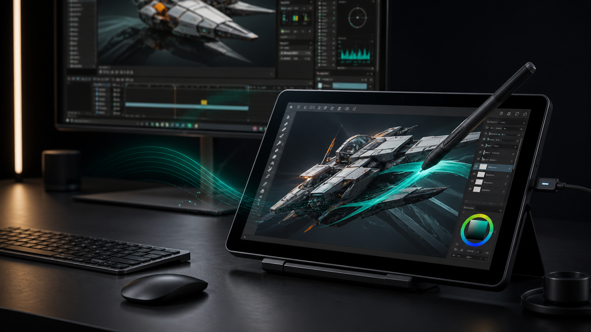

SwiftUI host shell
Sidebar navigation, toolbar actions, privacy checks, trusted-client review, and explicit VideoToolbox hardware encoder status.

Android pen display for creative desktops
Native hosts, encrypted realtime transport, and a hardware-first video path for artists who want an Android tablet to feel like a precise, high-quality pen display.
Native by platform
Sidebar navigation, toolbar actions, privacy checks, trusted-client review, and explicit VideoToolbox hardware encoder status.
Compose session cockpit with tablet-first controls for stream quality, fullscreen input, pairing, security, and diagnostics.
Hardware-first capture and encoding diagnostics, native permission prompts, startup controls, and host-side stream presets.
Downloads
Low-latency display surface, LAN discovery, secure pairing, stylus diagnostics, video settings, audio playback foundation, and realtime input routing.
Rust host with DXGI Desktop Duplication, Media Foundation H.264 hardware selection, secure UDP sessions, and Windows Ink-focused input work.
SwiftUI host, ScreenCaptureKit capture, VideoToolbox H.264, Keychain trust, encrypted sessions, and CGEvent mouse, keyboard, and touch-pointer input.
macOS priority
The Mac host now asks VideoToolbox for a hardware encoder before live streaming, exposes whether the session is actually hardware accelerated, and uses a high-quality low-latency H.264 profile by default.
Require accelerated VideoToolbox sessions for live stream startup and report the result in the UI.
Keep video datagrams bounded with backpressure counters instead of letting latency accumulate.
Scale bitrate by resolution and frame rate so the default stream starts closer to studio quality.
Local setup
Pick a platform and channel. Commands are generated locally in your browser and can be copied directly into your terminal.
Project status
Implementation foundation is nearly complete. Production readiness remains lower because signed distribution, long-run Mac and Android validation, real-device latency measurements, audio capture, relay work, and store compliance are still active gates.